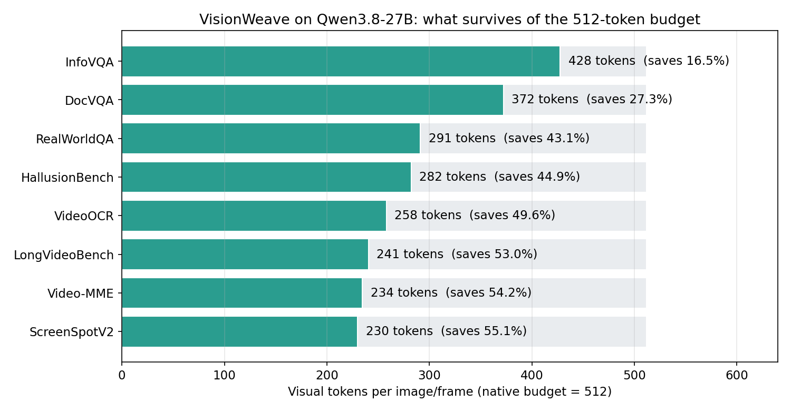
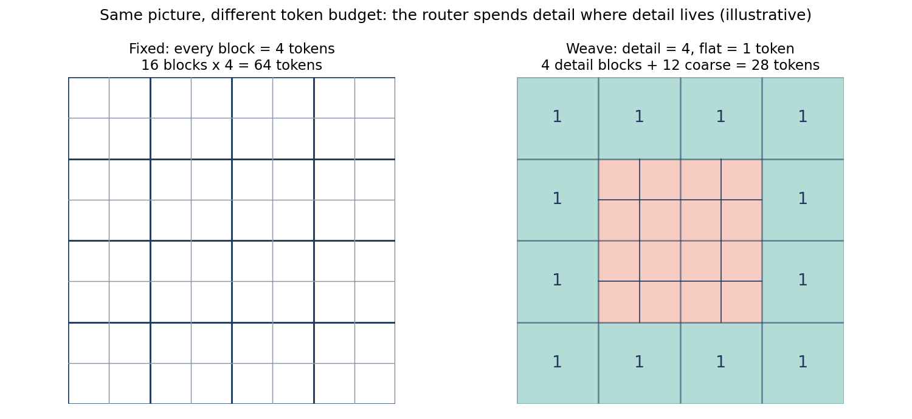
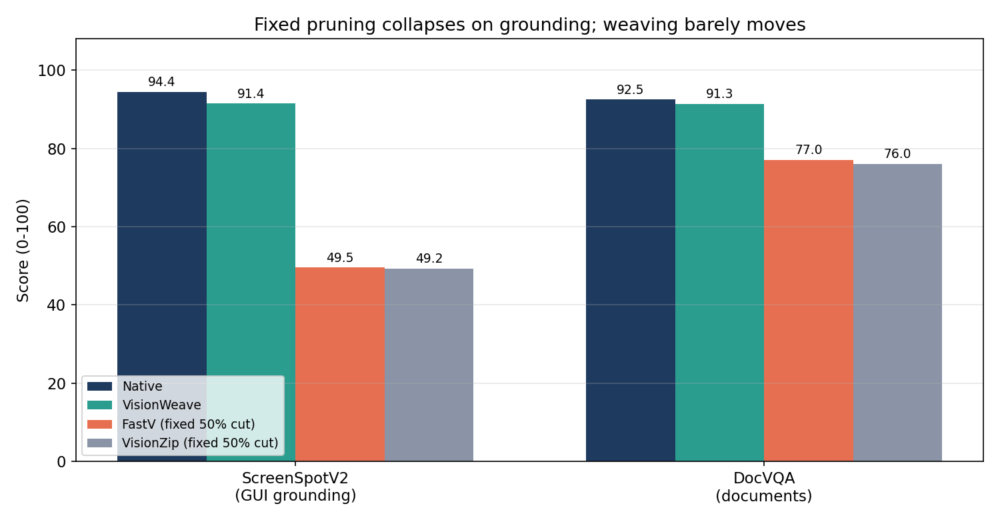
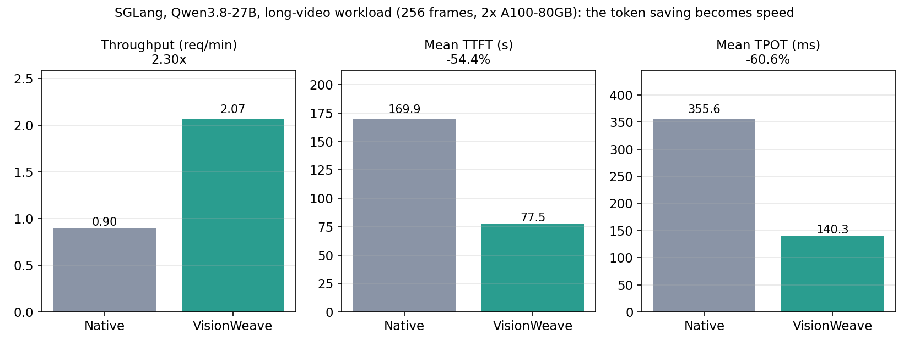

A vision-language model reads a picture the way you might read a page: it chops the image into patches and turns every patch into a token. A high-resolution photo or a long video quickly becomes thousands of tokens, and every one of them costs attention compute and KV-cache memory. On October 6, 2026, researchers from Alibaba's Qwen team (Yuan Feng and colleagues, with the University of Science and Technology of China) posted VisionWeave (arXiv:2610.07987), a method that stops spending the same number of tokens everywhere. Built on Qwen3.8-27B, it saves 43.0% of visual tokens on average while retaining 98.9% of native performance across eight benchmarks — and on an SGLang serving deployment it turns that saving into 2.30x end-to-end throughput.
The headline is not the compression ratio. It is where the tokens go: dense, detail-rich regions keep fine-grained tokens, flat regions get a single coarse token, and nothing is ever deleted outright.
The ELI5 version
Imagine describing a photo to a friend over a phone call that charges by the word. A fixed-rate plan forces you to use the same number of words for the sky as for the street sign: either you waste words on blue nothing, or you blur the sign into illegibility. VisionWeave is the smarter plan. It looks at the picture first and decides, region by region, where detail is worth paying for. The sky gets one word ("blue"). The street sign gets four. The total bill drops 43%, and your friend still reads the sign.
That is the whole idea, and it is a break from how visual token pruning has worked until now. Pruning deletes tokens it judges unimportant. VisionWeave downgrades them instead: every region stays represented, just at coarser granularity where the content allows it. That distinction is why it survives the tasks that kill pruning methods, as the numbers below show.
How it works: a pooler, a router, and a shared map
VisionWeave has two learned components, both operating inside the vision encoder before the language model ever sees the tokens.
1. The gated spatial pooler — the coarse vocabulary. The native Qwen pipeline merges each 2x2 block of vision patches into one fine-grained token. VisionWeave's pooler takes the same 2x2 neighbourhood and learns a single coarse token for it instead: it normalizes the four patch features, builds a shared context from all four, then computes channel-wise gates — a learned weighted average where the weight on each patch depends on that patch's content, not a fixed mean. Pool again through the native merger and you get a coarse token in the same embedding space as the fine ones, sitting at the geometric centre of its four fine tokens. Each 4x4 patch region therefore has two possible representations: four fine tokens, or one coarse token.
2. The granularity router — the spending decision. A learnable query per spatial block probes the vision transformer's features at multiple depths — early layers for low-level detail, later layers for semantics — and scores whether that block needs fine or coarse granularity. A threshold (default 0.5) turns the score into a choice, and the choices are woven into a single mixed-granularity sequence. Crucially, both granularities share one coordinate system (MRoPE, the multimodal rotary position embedding): the coarse token carries the centre coordinate of its four fine tokens, so the language model still knows where everything is, even at mixed resolution.
3. Self-distillation — the training trick that makes it native. Rather than bolting this on after training, the authors train it in: the elastic model is distilled from its own native (full-resolution) teacher, with no external teacher and no new labelled data. They validated it on Qwen3.5-4B, then scaled to Qwen3.8-27B at over 30,000 A100 GPU-hours. The threshold is also an inference-time knob: set it to 1.0 and every block goes fine-grained, recovering native performance; lower it to 0.25 and Video-MME savings rise from 54.2% to 66.0% for only a 0.37-point score loss. One model, a dial, no retraining.


The numbers: adaptive savings, and the task that exposes pruning
The main comparison uses a 512-token budget per image or frame on Qwen3.8-27B. The savings are content-adaptive in exactly the way the theory predicts: InfoVQA saves only 16.5% (infographics are dense text — nearly every region earns its fine tokens) and DocVQA 27.3%, while the three video benchmarks save 49.6–54.2% (consecutive frames repeat most of their content) and ScreenSpotV2 saves 55.1% — the GUI grounding task, paradoxically, saves the most while losing only 3.17% (2.99 points). The average across all eight benchmarks: 43.0% saved, 1.08% lost (76.73 vs 77.65 average score; 98.9% retention as the mean of per-benchmark retention).
Now the comparison that matters. At a fixed 50% savings target, the pruning baselines FastV and VisionZip retain only 88.2% and 87.5% of native performance on average — and they do not fail gracefully:

- ScreenSpotV2 (GUI grounding): native 94.42, VisionWeave 91.43 (−3.17%), FastV 49.53 (−47.54%), VisionZip 49.21 (−47.88%). Pruning deletes the token covering the button you are supposed to click; weaving keeps a coarse token there, so the target is still somewhere.
- DocVQA: native 92.47, VisionWeave 91.33 (−1.23%), FastV 77.05 (−16.68%), VisionZip 76.01 (−17.80%). Pruning drops characters mid-word; weaving represents large text coarsely but completely.
- The ablation proves the router is doing real work, not just picking a lucky budget. Shuffle the routing scores within each image — same number of coarse blocks, wrong places — and the 27B average falls 5.36 points, with ScreenSpotV2 alone collapsing 32.15 points. Where beats how many.
And the serving test is what separates this from a benchmark curiosity. On SGLang (2x A100-80GB, BF16, tensor-parallel 2, LongVideoBench at 2 FPS with a 256-frame cap, 1024 tokens per frame), VisionWeave delivers 2.07 vs 0.90 requests/min (2.30x), mean time-to-first-token 169.90s → 77.54s (−54.4%), and mean time-per-output-token 355.64ms → 140.29ms (−60.6%). Tail latency improves too: P95 TTFT −57.1%, P95 TPOT −59.6%. This works on a production serving engine precisely because weaving happens before the LLM, in the encoder — unlike in-LLM pruning, which fights the serving stack's batching and KV-cache assumptions.

The honest caveat — where this could break
Four things to keep in view. First, this is a preprint, not yet peer-reviewed, and every number is author-reported — the eight benchmarks, the SGLang run, the 30,000 GPU-hour training bill all come from the paper, with no independent replication yet. Second, it is demonstrated on one model family (Qwen3.5-4B and Qwen3.8-27B, both Alibaba); whether elastic weaving transfers to other vision encoders and MRoPE-free architectures is unproven. Third, the serving headline is a long-video workload: 256 frames at 1024 tokens per frame is an extreme sequence, and the 2.30x will shrink on ordinary single-image prompts where vision tokens are a smaller share of the sequence. Fourth, the training cost is the catch: 30,000+ A100 GPU-hours to make the capability native means this is a foundation-model-lab technique today, not a fine-tune you run overnight — the inference savings pay it back only at serving scale.
Takeaways
- Visual information is unevenly distributed, so token budgets should be too. VisionWeave saves 16.5% on infographics and 55.1% on GUI grounding — the router, not a fixed ratio, decides.
- Downgrade, don't delete. Keeping every region represented at coarse granularity is why grounding survives (91.43 vs 49.53 for pruning) and documents stay readable (91.33 vs 77.05).
- Where matters more than how many. Shuffling the router's choices at the same budget costs 5.36 points on average and 32.15 on grounding — allocation is the capability, not the compression ratio.
- Encoder-side efficiency is serving-compatible efficiency. Because weaving happens before the LLM, SGLang turns a 43% token cut into 2.30x throughput, −54.4% TTFT, and −60.6% TPOT.
- The price is paid in training, not inference. 30,000+ A100 GPU-hours to distil the capability natively — worth it for a served frontier model, out of reach as a weekend project.
- Check it yourself. The companion notebook recomputes every headline number from the paper's Table 4 and Table 5, runs a toy gated pooler that preserves a sharp detail patch where mean pooling blurs it, and shows why attention cost falls faster than the token count (a 43% token cut is a ~67% cut in vision attention pairs).